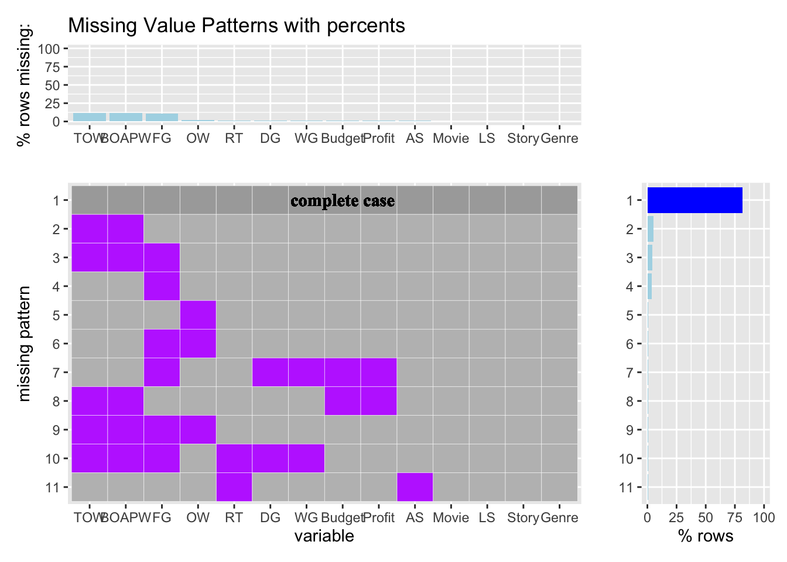

Chapter 4 Missing values
<<<<<<< HEADWe have found that our final data set has missing values in only few rows which is not really useful. We decided to omit them and use the ucla_textbooks_f18 data set in openintro package.
 =======
=======
missing_value_plot<-function(data,type='counts'){
# find and count the missing patterns
missing_patterns <- data.frame(is.na(data)) %>%
group_by_all() %>%
count(name = "count", sort = TRUE) %>%
ungroup()
# add id to each row
missing_patterns <- missing_patterns %>%
mutate(id=row_number(),.before=1)
# tidy the missing patterns
new_missing_patterns <- missing_patterns %>%
mutate_if(is.logical, as.character)
#mutate_all(funs(as.character(.)))
for (i in 1:nrow(new_missing_patterns)) {
flag <-0
for (j in 2:ncol(new_missing_patterns)) {
if (new_missing_patterns[i,j]=='TRUE') {
flag <- 1
}
}
if (flag==0) {
new_missing_patterns[i,2:(ncol(new_missing_patterns)-1)] <-'complete'
}
}
tidypatterns <- new_missing_patterns %>%
select(-count) %>%
pivot_longer(cols=!id,names_to ='key',values_to='value')
# Plot the main graph
column_sum <- colSums(is.na(data))
variable_order <- names(sort(column_sum,decreasing = TRUE))
variable <- fct_relevel(tidypatterns$key,variable_order)
main <- ggplot(tidypatterns,aes(x=variable,y=fct_rev(factor(id)),fill=value))+
geom_tile(color = "white")+
scale_fill_manual(values = c('TRUE'='darkorchid1','FALSE'='grey','complete'='darkgrey'))+
theme(legend.position = "none")+
labs(x='variable',y='missing pattern')
# add text
complete_loc <- tidypatterns$id[which(tidypatterns$value=='complete')]
x <- as.integer(ncol(data)/2)+1
for (i in complete_loc) {
y <- nrow(missing_patterns)-i+1
main <- main+geom_text(aes(x=x,y=y,label='complete case'),size=4,family="Times New Roman",fontface='bold')
}
if (type=='counts'){
# plot the top graph
column_count<-data %>%
summarise_all(~ sum(is.na(.x))) %>%
pivot_longer(cols=everything(), names_to="variable", values_to="count") %>%
arrange(desc(count))
top <- ggplot(column_count,aes(x=factor(variable, levels=column_count$variable), y=count))+
geom_col(fill='lightblue')+
labs(x='',y='num rows missing:')+
ggtitle('Missing Value Patterns with counts')
# plot the right graph
row_count <-new_missing_patterns %>%
add_column(status='missing')
for (i in 1:nrow(row_count)) {
if (any(row_count[i,]=='complete')){
row_count[i,'status']<-'complete'
}
}
right <- ggplot(row_count,aes(x=count,y=fct_rev(factor(id)),fill=status))+
geom_col()+
scale_fill_manual(values=c('blue','lightblue'))+
theme(legend.position = "none")+
labs(x='row count',y='')
}
else if (type=='percents'){
# plot the top graph
column_count <- data %>%
summarise_all(~ 100*sum(is.na(.x))/nrow(data)) %>%
pivot_longer(cols=everything(), names_to="variable", values_to="count") %>%
arrange(desc(count))
top <- ggplot(column_count,aes(x=factor(variable, levels=column_count$variable), y=count))+
geom_col(fill='lightblue')+
scale_y_continuous(limits=c(0,100),breaks=seq(0,100,by=25))+
labs(x='',y='% rows missing:')+
ggtitle('Missing Value Patterns with percents')
# plot the right graph
row_count <-new_missing_patterns %>%
add_column(status='missing') %>%
mutate(count=100*(count/nrow(data))) %>%
arrange(desc(count))
for (i in 1:nrow(row_count)) {
if (any(row_count[i,]=='complete')){
row_count[i,'status']<-'complete'
}
}
right <- ggplot(row_count,aes(x=count,y=fct_rev(factor(id)),fill=status))+
geom_col()+
scale_fill_manual(values=c('blue','lightblue'))+
scale_x_continuous(limits=c(0,100),breaks=seq(0,100,by=25))+
theme(legend.position = "none")+
labs(x='% rows',y='')
}
else (print('Wrong Type Input'))
top + plot_spacer() + main + right +
plot_layout(
ncol = 2,
nrow = 2,
widths = c(4, 1),
heights = c(1, 4)
)
}missing_value_plot(ggplot2::economics,type='counts')
missing_value_plot(ggplot2::economics,type='percents')df_c<-Lock5withR::HollywoodMovies2011
colnames(df_c)<-c('Movie','LS','RT','AS','Story','Genre','TOW',
'BOAPW','DG','FG','WG','Budget','Profit','OW')
missing_value_plot(df_c,type='counts')missing_value_plot(df_c,type='percents') We have found that our final data set has missing values in only few rows which is not really useful. We decided to omit them and use the ucla_textbooks_f18 data set in openintro package.
library(openintro)
missing_value_plot(openintro::ucla_textbooks_f18,type='counts')
missing_value_plot(openintro::ucla_textbooks_f18,type='percents') >>>>>>> c31daf2a7f249b937e21d8606bd7f525bee87fc6
According to the plot above, we can tell that there are 20 missing patterns and the fifth missing pattern is a complete case. The fisrt missing patterns has the highest row count. It seems that there is correlation between the price of new books and used books both in amazon and in bookstore because they all have really high missing values compared with other variables. Also, it’s quiet strange that there are so many missing values in book price variables. Regarding of book features,textbook_isbn is more likely to be missing than any other book features except price because book isbn is long and complicated and people normally won’t use isbn much when they buy books. There are three columns, year,term and subject doesn’t have missing values. One interesting observation is that there are no missing values in subject, but there are missing values in Subject abbreviation which means that some book are not used for one specific subject but for multiple subjects and that’s why the subject abbr is missing because it doesn’t know how to fill in the subject abbreviation.
>>>>>>> c31daf2a7f249b937e21d8606bd7f525bee87fc6
According to the plot above, we can tell that there are 20 missing patterns and the fifth missing pattern is a complete case. The fisrt missing patterns has the highest row count. It seems that there is correlation between the price of new books and used books both in amazon and in bookstore because they all have really high missing values compared with other variables. Also, it’s quiet strange that there are so many missing values in book price variables. Regarding of book features,textbook_isbn is more likely to be missing than any other book features except price because book isbn is long and complicated and people normally won’t use isbn much when they buy books. There are three columns, year,term and subject doesn’t have missing values. One interesting observation is that there are no missing values in subject, but there are missing values in Subject abbreviation which means that some book are not used for one specific subject but for multiple subjects and that’s why the subject abbr is missing because it doesn’t know how to fill in the subject abbreviation.